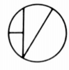
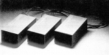
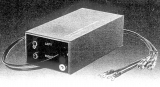

COTTER（コッター）
【注意事項】
アメリカのブランド。1979年頃、当時で20万円近い高級トランスが輸入されていた。各種インピーダンスに対応する製品があったが、切替スイッチ等を持たないシンプルなトランスだった。
代理店はアール・エフ・エンタープライゼス。
�T.昇圧トランス

Mark2/TypeP Mark2/TypePP Mark2/TypeS

Mark2/TypeL
サイトマップへ